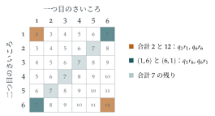

STEP I 1999、第12問
先に進む前に問題を読んでおこう。問題は STEP Support Programme の問題データベースにある： step.maths.org/questions/99-s1-q12
導入
公正なさいころを二つ振ると、合計が \(7\) になる確率は合計が \(2\) になる確率の六倍である。ボードゲームの設計者は、そうでなければよいのにと思うことがある。さいころに細工をして（load、特定の目が出やすくなるように重りを入れて）、\(2\) から \(12\) までのどの合計も同じ確率 \(\frac{1}{11}\) で出るようにできないだろうか。十二個の確率は自由に選べるのだから、余地は十分にありそうに見える。
答えは「できない」であり、その証明は珠玉である。十一通りの合計のうち三つと、不等式 \(x + \frac1x \geq 2\) しか使わないのである。これは何かが不可能であることを証明する方法の手本である。不可能性の証明は、何かが可能であることを示すよりも難しく、そしてより面白いことが多い。
取りかかる前に
\(x > 0\) に対して \(x + \frac1x \geq 2\) をどのように証明するか。等号が成り立つのはどのようなときか。
\(x > 0\) を掛けると、不等式は \(x^2 + 1 \geq 2x\)、すなわち \((x - 1)^2 \geq 0\) となり、これは正しい。等号は \(x = 1\) のときに限り成り立つ。（別解として、\(x + \frac1x - 2 = \bigl(\sqrt x - \frac{1}{\sqrt x}\bigr)^2\) としてもよい。）これは最も単純な形の相加平均・相乗平均の不等式（AM–GM inequality）である。すなわち、\(x\) と \(\frac1x\) の相加平均は、それらの相乗平均 \(1\) 以上である。
順を追って解く
段階 1 両端の合計
合計 \(2\) を出す方法は何通りあるか。合計 \(12\) はどうか。それらの確率を \(q_i\) と \(r_j\) を用いて表せ。
合計 \(2\) には両方のさいころで \(1\) が、\(12\) には両方で \(6\) が必要であるから、\(\mathrm{P}(2) = q_1r_1\)、\(\mathrm{P}(12) = q_6r_6\) である。
背理法（proof by contradiction）のために、十一通りの合計がすべて等確率、すなわちそれぞれ確率 \(\frac{1}{11}\) であると仮定する。このとき \[q_1r_1 = \frac{1}{11}, \qquad q_6r_6 = \frac{1}{11}.\] 特に、\(q_1\)、\(r_1\)、\(q_6\)、\(r_6\) の四つはすべて正である。
段階 2 真ん中の合計
合計 \(7\) の作り方は六通りある。そのうち \(1\) と \(6\) の目だけを含むのはどの二つか。上の等式を用いて、それらの確率を表せ。
合計 \(7\) には結果 (\(1\), \(6\)) と (\(6\), \(1\)) が含まれるから \[\mathrm{P}(7) \geq q_1r_6 + q_6r_1.\] ここでステージ 1 の等式を用いて比を導入する。\(q_1 = \frac{1}{11r_1}\)、\(q_6 = \frac{1}{11r_6}\) であるから \[q_1r_6 + q_6r_1 = \frac{1}{11}\Bigl(\frac{r_6}{r_1} + \frac{r_1}{r_6}\Bigr) \geq \frac{1}{11} \times 2 = \frac{2}{11},\] となる。ここで \(x = r_6/r_1 > 0\) として \(x + \frac1x \geq 2\) を用いた。よって \(\mathrm{P}(7) \geq \frac{2}{11}\) となり、\(\mathrm{P}(7) = \frac{1}{11}\) に矛盾する。したがって、合計がすべて等確率になることはありえない。■
何が証明をうまく機能させたかを見てみよう。\(2\) と \(12\) を \(7\) と同じくらい出やすくすると、\(1\) と \(6\) の目がかなり出やすくなければならない。すると「混ざった」結果 (\(1\), \(6\)) と (\(6\), \(1\)) だけで、\(7\) が出やすくなりすぎてしまうのである。図 9.13.1 に関係するマスを示す。

段階 3 一つのさいころを二回振る
一つのさいころを二回振るとき、二つの目が一致する確率を \(q_j\) を用いて表せ。公正なさいころではいくらか。
二回の目が一致する確率は \(q_1^2 + q_2^2 + \cdots + q_6^2\) である。公正なさいころではこれは \(6 \times \frac{1}{36} = \frac16\) であり、すでに \(\frac{1}{36}\) よりずっと大きい。
細工によって \(\sum q_j^2\) を \(\frac16\) より小さくできるか。\(\sum q_j = 1\) であることはわかっている。
\(q_j = \frac16 + e_j\) とおく。ここで偏差 \(e_j\) の和は \(0\) である。すると \[\sum q_j^2 = \sum\Bigl(\frac{1}{36} + \frac{e_j}{3} + e_j^2\Bigr) = \frac16 + \frac13\sum e_j + \sum e_j^2 = \frac16 + \sum e_j^2 \geq \frac16.\] よって同じ目が続く確率はつねに \(\frac16\) 以上であり、等号は公正なさいころの場合に限り成り立つ。まして \(\frac{1}{36}\) 未満になることはありえない。■
振り返り
背理法。すべての合計が等確率であると仮定し、不可能なことを導いた。
必要なものだけを使う。十一個の等式のうち、三つで十分であった。正しい等式を選ぶことが鍵となる一歩であった。
不等式は不可能性を証明する。小問 (i) では相加平均・相乗平均の不等式が、小問 (ii) では「平方和は負でない」ことが、可能性の族全体を一挙に排除した。
背後にある数学
多項式による証明
ここでは 第 9.6 節 の母関数（generating function）を用いた、まったく別の証明を紹介する。\(Q(x) = q_1x + \cdots + q_6x^6\)、\(R(x) = r_1x + \cdots + r_6x^6\) とおく。すべての合計の確率が \(\frac{1}{11}\) であるとすると \[Q(x)R(x) = \frac{x^2 + x^3 + \cdots + x^{12}}{11} = \frac{x^2}{11}\bigl(1 + x + \cdots + x^{10}\bigr).\] ここで \(Q(x)/x\) は実数係数の \(5\) 次多項式であり、奇数次の実数係数多項式はすべて実数解をもつ（グラフが \(-\infty\) から \(+\infty\) へ、あるいはその逆へ向かうからである）。よって左辺は \(0\) でない実数解をもつ。ところが \(1 + x + \cdots + x^{10} = \frac{x^{11} - 1}{x - 1}\) であり、その解は \(1\) 以外の \(11\) 乗の単位根（roots of unity）で、そのどれも実数ではない。これは矛盾である。同じ議論により、\(n - 1\) が奇数のとき、すなわち \(n\) が偶数のとき、二つの \(n\) 面さいころにどのような細工をしても合計を等確率にはできないことがわかる。（\(n\) が奇数のときは多項式による議論にはさらに工夫が必要であるが、上の相加平均・相乗平均の不等式による証明はすべての \(n \geq 2\) で通用する。）
衝突確率
小問 (ii) の量 \(\sum q_j^2\)、すなわち独立な二回の抽出が一致する確率は、分布の衝突確率（collision probability）とよばれる。小問 (ii) は、これが一様分布のとき最小になることを示している。衝突確率は分布がどれほど集中しているかを測る量である。生態学では、\(q_j\) をある生息地における種 \(j\) の割合として、\(\sum q_j^2\) はシンプソンの多様度指数（Simpson’s index）である。経済学では市場集中度を表すハーフィンダール指数（Herfindahl index）であり、暗号理論ではパスワードの分布がどれほど推測されやすいかを測る。さらにこれは 第 9.9 節 の最後で述べたこと、すなわち誕生日の確率が不均等であれば誕生日が一致する確率は大きくなるしかない、ということを説明している。
数学で最も有名な結果のいくつかは、何かができないことを主張するものである。2乗して \(2\) になる分数は存在しない。定規とコンパスによる作図で任意の角を三等分することはできない。冪根を用いた公式ですべての五次方程式を解くことはできない。あらゆる数学的命題の真偽を判定するアルゴリズムは存在しない。これらはどれもその分野を変えた。なぜなら、どの方法もうまくいかないことを証明するには、方法の全体を理解しなければならないからである。細工したさいころの問題はその縮図である。あらゆる細工を排除するために、どの細工も従わねばならない不変な性質（相加平均・相乗平均の不等式）が必要であった。
思考のスキル
どのようなパラメータの選び方もうまくいかないことを示すには、うまくいく選び方があると仮定し、互いに衝突する少数の条件を選び出し、不等式を用いてそれらが同時には成り立たないことを示す。
大学では、背理法と不等式の組合せは、対象が存在しないことを証明する標準的な方法である。解析学でも、組合せ論でも、最適化でもそうであり、最適化では相加平均・相乗平均の不等式やコーシー＝シュワルツ（Cauchy–Schwarz）の不等式のような不等式が、達成できることの限界を定める。
次の一歩
コーシー＝シュワルツの不等式。コーシー＝シュワルツの不等式 \(\bigl(\sum a_jb_j\bigr)^2 \leq \sum a_j^2\sum b_j^2\) を \(a_j = q_j\)、\(b_j = 1\) として用い、小問 (ii) の一行の証明を与えよ。
異なる二つのさいころ。異なる二つの細工したさいころをそれぞれ一回ずつ振るとき、同じ目が出る確率は \(\frac16\) より小さくなりうるか。\(0\) になりうるか。
別の目をもつさいころでの一様な合計。目の数の付け方が異なれば、二つのさいころで合計を等確率にできることを示せ。一方のさいころの目を \(0, 1, 2, 3, 4, 5\)、もう一方を \(0, 6, 12, 18, 24, 30\) としてみよ。どのような合計が現れるか。これが問題と矛盾しないのはなぜか。
三つのさいころ。目が \(1\) から \(6\) である三つの細工した六面さいころで、\(3\) から \(18\) までのすべての合計を等確率にできるか。（ヒント：合計 \(3\)、\(8\)、\(13\)、\(18\) と、六つの数に対する相加平均・相乗平均の不等式を用いよ。今回、多項式による証明がうまくいかないのはなぜか。）
さらに学ぶために
J. Michael Steele, The Cauchy–Schwarz Master Class（Cambridge University Press）。相加平均・相乗平均の不等式から始まる、不等式への美しい入門書。
Geoffrey Grimmett & Dominic Welsh, Probability: An Introduction（Oxford University Press）。母関数と、上のような証明におけるその使い方。
Ian Stewart, Galois Theory（CRC Press）、冒頭の数章。五次方程式に関する、あらゆる不可能性の証明の中で最も有名なもの。